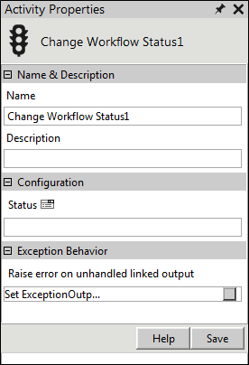

No
Activity description:
The Change Workflow Status Activity updates the status of the workflow in the database.
Activity Properties:
The Change Workflow Status activity has to be configured by specifying appropriate values for the different properties in the Activity Properties area. The Activity Properties can be accessed by clicking on the Activity Properties tool in the Tool Bar or by selecting the appropriate option from the right-click menu for the Change Workflow Status activity. The Activity Properties are organized under the following groups of related properties. The properties under each group are described in this topic.

Change Workflow Status Activity Properties
Name & Description
The properties in the Name & Description group have been described below. You can use these properties to specify the name and description for the activity.
Name - This property can be used to specify a name for the activity.
Property Type: Optional (This property needs to be set only if necessary.)
Description - This property specifies a brief description to be displayed for the activity.
Property Type: Optional (This property needs to be set only if necessary.)
Configuration
The properties in the Configuration group have been described below. You can use these properties to configure the functionality of the activity.
Status - This property specifies the new status to be updated.
Property Type: Mandatory (This property must be set if the activity is to be executed.)
Activity outputs:
The Change Workflow Status Activity does not return any value.
Exception Behavior
Each activity has the Raise Error on Unhandled Linked Output property on click of which, it shows all the default configured mapped error outputs in red with their check boxes selected.
See Mapped Error Outputs for more details.